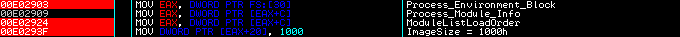

| Outils utilisés | Connaissances requises | Cible |
|---|---|---|
|
|
- Les nombreux articles Under The Hood
- Inside Windows 2000 (Chapter 6:Processes, Threads, and Jobs)
- Undocumented fonctions for Windows NT
Et n'ayez pas peur de tracer dans les apis pour comprendre leur fonctionnement!
- Présentations
- Analyse du Loader
- Table des JMP [IAT]
- Macros d'obfuscation
- Structured Exception Handling
- Résolution des imports du Loader
- Meltices
- Recherche de "isdebug.dll" (BSOD)
- Détection de IceExt
- FindWindow OLLYDBG
- Anti-Dump
- Délocalisation de fonctions
- Redirection de l'IAT
- Vérification des anti-debugs
- Deuxième SEH
- Layers de cryptage
- OutputDebugString Buffer Overflow
- SetUnhandledExceptionFilter
- Deuxième type de Layers de cryptage
- FindWindow OLLYDBG (Cryptage)
- SetUnhandledExceptionFilter (Leurre)
- Leurre pour FileMon
- Données d'enregistrement
Script final pour arriver au début de la fonction de vérification du serial. Désactiver la gestion des exceptions dans OllyDbg puisque le script les gère. De plus, il cache le debugger. Par contre OllyDbg doit être patché au niveau du nom de sa classe. Script disponible ici.
Kaine nous précise que le crackme est codé en asm et que le but est de trouver une clé d'enregistrement. De plus, il nous prévient d'une forte probabilité de plantage en cas d'utilisation intensive de OllyDbg.
PEiD ne reconnait pas l'exécutable mais en fouillant un peu avec un éditeur hexa et LordPE, on remarque que la VSize de la première section n'est pas 00016A46 mais 00016BA4. Effectivement, après modification, PEiD reconnait bien l'executable. Donc on charge le programme dans Olly pour commencer l'analyse du code.
L'accueil est plutôt sympathique, il y a toute une série de salutations et on nous souhaite bonne chance! :)
Nous avons donc 6 boucles de décryptage. Les 3 premières se décryptent successivement puis la 4ème décrypte 2 tableaux (en 004179B6) qui contiennent des liens vers une zone mémoire qui sera allouée plus tard. Cette portion de code sera chargée d'appeler les apis. Les 2 dernières boucles décryptent le reste de la section de code à partir de 00413000.
Ensuite, une nouvelle section est créée avec VirtualAlloc dont l'adresse est obtenue via une fonction émulant GetProcAddress. Une telle fonction est facilement reconnaissable par les constantes utilisées, notamment les 2 MagicWord du Dos Header et du PE Header auquel est ajouté 78, pour récupérer le VA de l'ExportDirectory (Pour une description détaillée, lisez les tuts de Neitsa OwnGetProc). Puis une partie du code est copiée dans cette section avant de sauter dessus.
Etant donné la complexité du crackme, il serait pratique de pouvoir sauvegarder l'état d'avancement de l'étude pour y revenir plus tard et éviter ainsi de se retaper les nombreux anti-debug. Nous allons donc créer un OllyScript qui va automatiser les actions effectuées jusqu'à la position actuelle. Ainsi, lorsque l'on voudra reprendre l'étude du programme, il suffira de lancer le script.
eob Break // Poursuit à partir du label Break lorsque le BP est atteint
bphws 0041728B, "x" // Place un BP Hardware On Execution à l'adresse 0041728B
run // Lance le programme
Break:
bphwc 0041728B // Supprime le BP Hardware
ret // Fin du script
Pour le moment rien d'exceptionnel, mais au fur et à mesure de l'analyse, le script sera enrichi.
Avant de continuer on va restaurer la table des JMP API car elle a été modifiée:
Pour appeler une api, nous aurons par exemple CALL 004179B6 qui appelle un JMP qui nous envoit sur un calcul de l'adresse de l'api dans l'iat avant de sauter dessus. Pour faciliter l'analyse, nous allons transformer ces JMP DWORD en JMP DWORD PTR [IAT]. Ainsi, OllyDbg nous affichera le nom des apis en commentaires des CALL.
Voici le script qui effectue cette transformation:
var x var deb var addr mov deb, 004179B6 // Début de la table de JMP [IAT] Loop: cmp [deb], 262248B8 // Fin de la table? je FinRB mov x, deb inc deb // Saute le E9 add x, [deb] // Destination du JMP add x, 6 // + les 5 octets du JMP + MOV mov addr, [x] // 1er DWORD add x, 5 // addresse du 2eme DWORD add addr, [x] // Addresse de l'IAT dec deb // retourne sur le début du JMP mov [deb], #FF25# // Remplace le JMP DWORD par JMP [DWORD] add deb, 2 // Saute les 2 octets patchés mov [deb], addr // Sauvegarde l'adresse de l'IAT add deb, 4 // JMP suivant cmp [deb], 801025FF // JMP [IAT] ? jne Loop // suivant add deb, 6 // sinon on le saute jmp Loop // suivant FinRB: ret // Fin du script
Le problème avec les sections virtuelles, c'est que OllyDbg ne sait pas les analyser. En effet, il se réfère au PE Header pour travailler sur le programme dans son ensemble. C'est pourquoi, il ne sait pas analyser une partie de code seule. De plus, cette section contient de nombreuses macros d'"obfuscation" contenant du code inutile, destinées seulement à rendre illisible le listing désassemblé. Il va donc falloir nettoyer tout ça avant de pouvoir poursuivre.
On va commencer par tracer tranquillement avec F7, pour délimiter le code de la macro et trouver les octets qui décalent la suite du code. Il suffira ensuite, de patcher ces octets pour retrouver un listing compréhensible.

La première macro commence par 2 CALL et fini par un JMP. On peut la voir sur la capture ci-dessus en 00E01002 jusqu'en 00E01019. Voici son code source (MASM):
CCA01 MACRO LOCAL S1, S2 CALL S1 DB 0E8h ; Apparait comme CALL XXXX (jamais exécuté) S1: CALL S2 INT 20h ; jamais exécuté S2: ADD DWORD PTR [ESP], 0Bh ; Adresse de retour du 2ème CALL sur le RET ADD DWORD PTR [ESP+4], 13h ; Adresse de retour du 1er CALL pour revenir RET ; juste après le DB 0E9h DB 0E9h ; Apparait comme JMP XXXX (jamais exécuté) ENDM
Il suffit de remplacer le E9 final par un NOP, pour voir l'instruction qui suit correctement.
La 2ème macro commence par PUSHAD PUSHFW et on peut donc supposer qu'elle finisse par POPFW POPAD. Cela signifie que toutes les opérations effectuées entre ces 2 blocs, seront sans conséquences sur le déroulement du programme. On voit sur la capture qu'elle commence en 00E0101A et fini en 00E0103B.
Voici son code source (MASM):
CCA02 MACRO LOCAL S1, S2 PUSHA ; Sauvegarde des Registres PUSHF ; Sauvegarde des Flags XOR EAX, EAX CALL S1 ; Place OFFSET S1 sur la pile S1: ADD AL, 0Fh ; Inutile JMP S2 POPF ; Jamais exécuté POPA ; Jamais exécuté S2: POP EBX ; EBX = OFFSET S1 MOV BYTE PTR [EBX], 0EBh ; Remplace l'instruction ADD AL, 0Fh par JMP 0Fh JE $+0Dh ; Inutile PUSH EBX ; Remet OFFSET S1 sur la pile RET ; Retourne sur OFFSET S1 DW 05C7h ; Apparait comme MOV DWORD PTR [XXXX],XXXX (Jamais exécuté) MOV BYTE PTR [EBX], 4 ; Restaure l'instruction ADD AL, 0Fh POPF ; Restaure les Flags POPA ; Restaure les Registres ENDM
Le JMP 0Fh créé à l'exécution saute sur l'instruction MOV BYTE PTR [EBX], 4. On voit que ce sont essentiellement les octets C705 qui perturbent le code. Donc, en les patchant, tout s'arrange! :)
Maintenant, le problème c'est que si ces macros apparaissent 50 fois, cela va vite devenir fastidieux de tout patcher à la main. Donc, on va écrire un script pour automatiser tout ça! Scipt disponible ici.
J'ai ajouté des BP pour que les instructions importantes apparaissent du premier coup d'oeil. Il arrive que les macros soient utilisées successivement, mais on peut les détecter facilement puisque l'on connait leur signature.
Il est maintenant plus aisé d'étudier le listing. On peut même tracer (avec attention) avec F9 puisque des BP sont posés sur chaque instruction importante.
Voici le code nettoyé:
Une gestion d'exceptions est mise en place avant de créer une exception en essayant de lire l'adresse 00000000.
Je vais d'abord détailler le fonctionnement du Handler puis du CALL FixImport et on poursuivra avec le JMP.
Le Handler modifie le registre EIP pour que le programme continue son exécution juste après l'instruction qui a générée l'erreur. Ensuite, il efface les éventuels Hardware BP, incrémente une variable (qui sera utilisée plus tard) puis vérifie la présence d'un BP sur l'adresse de retour. Dans ce cas, il appelle une procédure censée afficher une MessageBox, mais comme les Imports n'ont pas encore été résolus, une exception est générée et le programme se termine.
L'exécution se poursuit en 00E011B5 avec une procédure qui va récupérer les adresses de diverses apis.
Cette procédure est une suite de bloc de ce style :
Le premier CALL saute par dessus la chaine "kernel32.dll" et donc, place son adresse sur la pile. Une fois l'ImageBase de la dll sauvegardée, le CALL suivant place sur la pile l'adresse de la chaine "LoadLibraryA" et une procédure émulant GetProcAddress de la même façon que vu précédemment, est appelée. Les instructions suivantes vérifient la présence de BP sur les premiers octets de l'api. Si tel est le cas, le programme est envoyé sur une adresse bidon et plante.
Les apis récupérées laissent présager de nombreux anti-debug: SetUnhandledExceptionFilter, CreateFileA, CreateToolhelp32Snapshot, Process32First, Process32Next, Module32First, Module32Next, DebugActiveProcess (!), WriteProcessMemory, FindWindowA, IsDebuggerPresent, RegOpenKeyEx.
Une fois les adresses des apis sauvegardées, la procédure retourne sur le JMP 00E01E87 en 00E011BA où commence alors une longue série d'anti-debug.
On commence en douceur avec une série de MeltIce sur FROGSICE, NTALL, SICE, NTICE et TRW. Dans tous les cas, si un de ces drivers est trouvé, une MsgBox est affichée et le programme quitte.
Ensuite, une boucle parcourt la liste des processus en cours d'exécution et pour chacun, recherche le module "isdebug.dll" (bibliothèque utilisée par OllyDbg). S'il est trouvé, la fonction suivante est appelée:
La fonction met en place une boucle de debuggage et tente de debugger le processus fautif. Si elle réussit, elle patche quelques octets et attend une exception ou la destruction du processus. Dans les 2 cas, une MsgBox est affichée et le programme se ferme.
Le résultat de cette fonction diffère suivant que le processus fautif (OllyDbg) debugge le crackme ou un autre programme. Si le crackme est debuggé, nous avons droit à un beau crash de l'os avec reboot obligatoire. Je suppose que windows ne supporte pas que 2 processus se debuggent entre eux. Dans le cas d'un autre programme, le loader écrit le code suivant à un endroit précis de OllyDbg:
00E063F3 6A 00 PUSH 0 00E063F5 FF15 D4D25000 CALL DWORD PTR [50D2D4]
Sous OllyDbg 1.10, l'adresse 0050D2D4 contient l'adresse de ExitProcess. Ce code est placé à la place de Call ResumeThread dans la fonction gérant l'appui sur F9 (RUN PROGRAMM).
Le programme continue avec plusieurs détection de debugger qui renvoient vers des MsgBox en cas de présence. En commençant par un simple appel à IsDebuggerPresent.

Puis, le programme recherche la présence de IceExt dans la base de registre.
Puis, il cherche une fenêtre créée avec la classe "OLLYDBG". Cette méthode a l'avantage de pouvoir être utilisée contre n'importe quel programme fenêtré (OllyDbg, WinDbg, SmartCheck, Dede...). Elle est simple à implanter mais également simple à contourner.
Le principe est le suivant: à partir du moment où l'on connait le nom de la classe d'une fenêtre, on peut retrouver son HWND grâce à l'api User32.FindWindow. Il suffit donc de chercher le Handle de la fenêtre portant le nom souhaité, s'il existe, le programme est présent sinon il est absent.
Exemple:
HWND IsAppPresent = FindWindow("OLLYDBG", 0);
Le premier paramêtre est le nom de la classe de la fenêtre, le second, le titre de la fenêtre. Si celle-ci est trouvée, la valeur de retour est son Handle sinon la fonction renvoit 0. Mais ceci peut être contourner très facilement de 2 façons: soit en modifiant le programme pour qu'il cherche une autre classe, soit en patchant directement son debugger pour lui donner un nouveau nom.

Nous avons droit ensuite à un petit anti-dump en modifiant l'ImageSize du programme en mémoire.
Et enfin, une émulation de l'api IsDebuggerPresent au cas où la première ne l'aurait pas vu... Si tout se passe bien jusqu'ici, le programme saute vers une nouvelle zone.
Une zone mémoire est créée avant d'y copier 137 octets qui correspondent à la routine suivante (Cette fonction sera utilisée plus tard pour crypter le nom):
Ensuite, une nouvelle zone mémoire est allouée dans laquelle sont copiés 366 octets qui correspondent à la fonction suivante (Cette fonction sera utilisée plus tard pour décrypter des chaines utilisées par le programme.):
Une zone mémoire est créée encore une fois, mais cette dernière va contenir les adresses cryptées des apis utilisées par le programme.
Avant d'aller plus loin, nous allons modifier le script de sauvegarde de l'état d'avancement pour qu'il nous emmène directement au début du code de résolution des imports (en 00E031A0). Nous devons gérer 3 anti-debugs: IsDebuggerPresent, isdebug.dll et l'anti-dump. De plus, les gestions des exceptions de OllyDbg doivent être décochées puisqu'elles seront gérées par le script.
eob Break // Continue à partir du Label Break en cas de BP fill 7FFDF002, 01, 00 // Efface le flag BeinDebugged bphws 0041728b, "x" // HardwareBP sur le JMP 00E01000 run // Lance le programme Break: bphwc 0041728b //; Supprime le HardwareBP eoe handler // Gestion de l'exception run // Poursuit l'exécution handler: eob Break2 // Gestion du BP bp 00E011BA esto // Poursuit l'exécution après l'exception Break2: eob Break3 // Gestion du BP bc 00E011BA // Supprime le BP précédent mov [00E0255F], #6973536869743F2E7A6F62# bp 00E0293F // Patche "isdebug.dll" run Break3: eob Break4 // Gestion du BP bc 00E0293F // Supprime le BP précédent add eip, 7 // Passe l'anti-dump bp 00E031A0 run // Poursuit l'exécution Break4: bc 00E031A0 // Début de la résolution des imports ret
Cette partie de code va se charger de résoudre les imports, de crypter les adresses puis de copier le résultat ainsi que le code de décryptage dans cette zone mémoire.

D'abord, une émulation de GetProcAddress récupère l'adresse de la fonction.
Puis cette fonction génère aléatoirement un DWORD avec l'instruction RDTSC (retourne le nombre de cycles exécutés depuis le démarrage du processeur) utilisé comme clef de cryptage sur l'adresse de l'api. Ces 2 valeurs sont placées dans le code suivant (DWORD en rouge) qui est lui même copié dans la mémoire allouée précédemment.
Ce code remplace l'adresse de l'api dans l'iat. A la place du JMP DWORD PTR [IAT], nous aurons JMP DWORD PTR [addr de ce code dans la mémoire allouée].
L'appel à GetModulHandleA est un leurre pour Imprec, celui-ci renvoyant l'adresse de la 1ère api rencontrée. Ensuite, l'adresse de l'api est décryptée avant de tester la présence d'éventuels BP sur ses 5 premiers octets. Si tel est le cas, le programme saute sur une adresse bidon, sinon il saute sur l'api.
Ces opérations sont effectuées pour chaque api.
Après avoir rediriger l'IAT, le programme vérifie que la recherche de "isdebug.dll" a bien été effectuée. En effet, à chaque itération de la boucle, une variable était incrémentée et si celle-ci est inférieure à 5, une MsgBox nous insulte et le programe quitte. Sinon, une adresse est calculée à partir d'une variable qui a été mise à 1 lors du SEH du début. Si le Handler n'a pas été exécutté, on saute sur une adresse bidon. Si tout se passe bien, on saute en 004116D2.
Nous revoilà dans le code du programme avec un nouveau SEH, mais cette fois, le Handler est plus complexe. Il contient une série de layer de cryptage (camouflés par des macros) avec noyé au milieu le même principe d'effacement des debug register. En analysant les 2 premiers layers, on remarque que l'adresse de fin de décryptage est la même (00412B11) et en s'y rendant, on note un peu en-dessous le code typique de destruction de SEH (POP DWORD PTR FS:[0]).
Voici le code d'un layer de cryptage. Ils sont tous plus ou moins identiques, seul les instructions de décryptage changent.
Et voici le code à l'adresse de fin (00412B11):
Pour passer tout ça, on peut poser un BP sur l'adresse de retour du Handler dans ntdll, adresse qui se trouve sur la pile à l'entrée du Handler. Là on regarde dans la fenêtre de dump à l'adresse [ESP+8] qui correspond à la structure CONTEXT, puis en CONTEXT + B8 (eip) pour avoir l'adresse de retour. On voit que ça correspond bien à 00412B1C.
On saute donc en 0041149A où nous attend une nouvelle boucle de décryptage. Puis on saute en 004116D0 sur ce code fraichemment décrypté en 0041102D.
On va en profiter pour modifier le script pour qu'il s'arrète sur le JMP EAX en ajoutant ceci à la fin:
Break4: eoe Handler2 // Gestion de la 2ème exception bc 00E031A0 // Début de la résolution des imports fill 00E04423, 01, C3 // Patche CryptNCopy run Handler2: eob Break5 bp 004116D0 esto Break5: bc 004116D0 ret
J'ai également patché la fonction CryptNCopy pour éviter la redirection des imports en mettant simplement un RET au début de la fonction.
Il se trouve que nous sommes encore en présence de multiples layers de cryptage. Heureusement, on peut facilement leur trouver une signature. On va donc coder un script pour passer tous ces layers. Ces layers contiennent évidemment des macros d'obfuscation, mais celles-ci ne perturbent pas le vrai code, donc on va laisser tel quel.
Voici le code du 1er layer:
Les 3 premiers CALL placent sur la pile les adresses des 3 DWORDS qui les suivent avant d'être placés dans les registres. Les 2 premiers déterminent la plage de code à décrypter et le 3ème est l'adresse de saut vers le layer suivant. Le 2ème type de layer est sensiblement identique si ce n'est qu'il finit par POP EAX, JMP EAX.
Le 1er layer se trouve au dessus du code à décrypter, fait 216 octets et fini par POPFW, POPAD, JMP EDX. Le 2ème se trouve sous le code décrypté, fait 236 octets et fini par POPAD, POP EAX, JMP EAX. Maintenant que nous avons la signature des 2 types de layers, on va pouvoir écrire un script pour décrypter tout ça.
Voici le script en question (On peut même le rajouter à la fin du script de sauvegarde d'analyse.) :
//*************************************** // Script pour passer les layers du Crackme4 de Kaine // par Kharneth //*************************************** var deb LoopL1: eob Break02 mov deb, eip add deb, 214 // Vérifie la signature cmp [deb], E2FF619D // POPFW, POPAD, JMP EDX jne Fin01 add deb, 2 bp deb run // Exécute la boucle de décryptage Break02: bc deb sti eob Break01 mov deb, eip add deb, 234 // Vérifie la signature cmp [deb], E0FF5861 // POPAD, POP EAX, JMP EAX jne Fin01 add deb, 2 bp deb run // Exécute la boucle de décryptage Break01: bc deb sti // F7 jmp LoopL1 Fin01: ret // Fin du script
Le code se décrypte donc sans problème et le script s'arrête sur un dernier layer avec une fin différente, dont voici le code:
Les 3 CALL OFFSET servent juste à placer les adresses des chaines sur la pile et les 2 CALL DWORD PTR [ESI] appellent les apis dans l'iat redirigée.
OuputDebugString permet à un programme d'envoyer une chaine de caractère au debugger. Il se trouve que OllyDbg possède une faille à ce niveau qui permet d'effectuer un Buffer Overflow et donc de planter le debugger. Pour éviter ça, il suffit de mettre un 00 sur le premier caractère de la chaine "%s%s...".
Code à ajouter à le fin du script pour passer cette protection:
Fin01: mov deb, eip add deb, 281 cmp [deb], 8B5AD0FF // Vérifie que l'on est sur cette protection jne Fin02 eob Break03 bp deb // BP sur CALL EAX (OutputDebugString) run Break03: eob Break04 bc deb mov deb, [esp] // deb = adresse du paramètre mov [deb], 00000000 // Patche la chaine du BOF bp 00402E0C run Break04: bc 00402E0C sti Jmp LoopL2 // Reprend le décryptage des layers Fin02: ret // Fin du script
Ensuite, on retombe sur une série de layer classique, donc en exécutant le script seul, on les passe tranquillement pour arriver sur un appel à SetUnhandledExceptionFilter
Le CALL place l'adresse de la fonction sur la pile puis le MOV DWORD PTR [EBX], 0EB remplace le JNZ par un JMP et enfin, une exception est générée. Cela fonctionne comme un SEH, lorsqu'une erreur se produit, windows passe la main à la fonction déclarée. Ici, on saute en 0040323E. Seulement, il y a une petite subtilité, la fonction n'est appelée que si le programme n'est pas debuggé!
Gestion des exceptions:
Lorsqu'une erreur apparait, windows vérifie qu'il existe un Exception Handler en regardant dans la liste chainée SEH en FS:[0] et dans ce cas appelle la fonction spécifiée. Si l'erreur est gérée par la fonction, celle-ci retourne 0 dans eax et windows rend la main au programme. Sinon, la liste chainée SEH est parcourue jusqu'à ce qu'un Handler gère l'exception ou jusqu'au dernier qui est une fonction de kernel32. Cette fonction appelle l'api UnhandledExceptionFilter qui teste la présence d'un debugger pour lui passer l'exception ou en cas d'absence, appelle la fonction déclarée par SetUnhandledExceptionFilter. Si aucun des 2 n'est présent, l'api vérifie puis lance le debugger "Just-In-Time" (déclaré par l'utilisateur). Finalement, si rien de tout cela n'existe, une fenêtre de rapport d'erreur est affichée et le programme se ferme.
Call GetCurrentProcess Mov hProcess, eax Push 0 Push sizeof(DWORD) Push OFFSET Debugged Push 7 Push hProcess Call NTQueryInformationProcess
UnhandledExceptionFilter vérifie la présence d'un debugger en utilisant l'api native NTQueryInformationProcess. Cette fonction lit le membre DebugPort (InfoClass = 7) de la structure EProcess, structure contenant de nombreuses informations sur le processus au niveau du kernel, inaccessible directement en mode utilisateur. Ce membre contient le port LPC du debugger, utilisé de manière interne par windows pour une communication interprocess plus rapide. En cas d'absence de debugger, cette valeur est à 0.
Voici le code de UnhandledExceptionFilter sous XP Pro SP1:
Pour contourner cette protection, je pose un BP dans l'api UnhandledExceptionFilter puis j'inverse le flag de comparaison. Et en traçant dans le CALL, j'arrive sur la fonction de gestion, mise en place par SetUnhandledExceptionFilter.
S'il n'y a pas de SEH pour compliquer la gestion des exceptions comme ici, on peut aussi directement sauter sur la fonction de gestion lorsque l'exception survient. Ce que je vais faire dans le script.
Fin02: sub deb, C cmp [deb], 0156FF61 // CALL SetUnhandledExceptionFilter jne Fin03 eoe Handler03 run Handler03: add deb, 36 // Place le curseur sur en 0040F34B mov eip, deb // sur MOV EAX, 0040323E sti sti jmp LoopL1 // Continue le décryptage des layers Fin03: ret // Fin du script
Le programme s'arrête une nouvelle fois en 0040D7C0 avec une émulation de IsDebuggerPresent. On modifie le script pour continuer le décryptage des layers.
Fin03: mov deb, eip add deb, 249 cmp [deb], 106AE0FF // JMP EAX, PUSH 10 jne Fin04 eob Break01 // Poursuit le décryptage des layers bp deb run Fin04: ret // Fin du script
Nous avons maintenant un problème car la taille des layers de cryptage a changé. On va donc modifier le script pour prendre en compte ces nouveaux layers. Il est difficile de faire un script générique car il existe du code important (Anti-debugs) entre les différentes couches de cryptage.
//*************************************** // Script pour passer les layers de cryptage //*************************************** var deb LoopL1: eob Break02 mov deb, eip add deb, 214 // Vérifie la signature cmp [deb], E2FF619D // POPFW, POPAD, JMP EDX je N1 add deb, 1 cmp [deb], E2FF619D je N1 add deb, 5 cmp [deb], E2FF619D je N1 jmp LoopL2 N1: add deb, 2 bp deb run // Exécute la boucle de décryptage Break02: bc deb sti LoopL2: eob Break01 mov deb, eip add deb, 234 // Vérifie la signature cmp [deb], E0FF5861 // POPAD, POP EAX, JMP EAX je N2 add deb, 1 cmp [deb], E0FF5861 jne Fin01 N2: add deb, 2 bp deb run // Exécute la boucle de décryptage Break01: bc deb sti // F7 jmp LoopL1 Fin01: ret
Le script tourne jusqu'à s'arréter sur un nouvel anti-debug.
Le programme cherche la classe "OLLYDBG" dans les fenêtres actives. Mais le résultat de l'api (le HANDLE de la fenêtre ou 0 si rien n'est trouvé) est ajouté à chaque octet de la zone de code vers laquelle le programme saute ensuite. Donc si tout se passe bien, le code n'est pas modifié.
SetUnhandledExceptionFilter est de nouveau utilisé, mais cette fois, il ne s'agit que d'un piège. Aucune exception n'est créée et la fonction de gestion appelle une MsgBox qui demande de désactiver le debugger. Fonction également appelée si le résultat de FindWindowA est différent de 0. Ce type de code apparait une nouvelle fois juste après. On note également que les layers de cryptage se sont raccourcis mais comme il n'y en a que quelques uns, on va les passer à la main jusqu'en 00408535 où l'on arrive enfin au bout de ces décryptages!
On va donc modifier le script pour arriver directement ici:
Fin03: eob Break05 bphws 00408535, "x" run Break05: bphwc 00408535 ret
Puisqu'il n'y a plus d'anti-debug génants à partir du SetUnhandledExceptionFilter, on place simplement un BP hardware sur l'adresse de fin.
Nous avons droit maintenant à une nouvelle macro d'obfuscation, mais elle ne perturbe pas l'analyse.
Une boucle ouvre les 6 fichiers suivants 20 fois: Key.txt, RM.key, cle.txt, cool.reg, yeap.yop, hihi.txt. Aucun contrôle n'est effectué sur le résultat et le handle n'est même pas sauvegardé, il ne s'agit donc que d'un leurre.
Idée confirmée par le code suivant qui ouvre le fichier "I don't like Filemon.key" 30 fois.
Ensuite, le programme recherche un fichier .krm dans le répertoire de l'exe après avoir décrypter "\\*.krm*". S'il en trouve un, des calculs sont effectués sur son nom puis les résultats sont comparés à des valeurs. D'abord, les caractères du nom sont multipliés entre eux et le produit doit être égal à 020F1615h. Ensuite la somme des caractères doit être égal à 134h.
Pour retrouver le nom, on va décomposer le produit en facteurs premiers puis les multiplier entre eux pour trouver des caractères.
On obtient 89 x 23 x 5x5x5x5 x 3x3x3. Après quelques tests, on trouve:
89 nous donne Y (59h).
23 x 3 = 69 nous donne E (45h).
5 x 5 x 3 = 75 nous donne K (4Bh) 2 fois.
La somme (89 + 69 + 75 + 75) fait bien 134h.
On note le "KEY" possible, reste à trouver ou mettre le 2ème K. En fait, pour le moment l'ordre n'a pas d'importance. Nous devons donc mettre dans le répertoire de l'exe, un fichier KKEY.krm. On verra plus tard pour l'ordre des lettres.
Ensuite, le fichier est ouvert avec CreateFileA puis sa taille est comparée à 37h et 4Bh. Elle doit être comprise entre les 2. Puis le fichier est copié en mémoire avec MapViewOfFile.
D'abord, le programme compare les 22 premiers octets avec "[Registration Infos]\r\n", puis les 7 octets suivants avec "Name = ". Ces chaines sont décryptées avant la comparaison puis recryptées après. Ensuite, le nom, qui ne doit pas dépasser 14 caractères, est copié et les octets suivants sont comparés à "Serial = ". Finalement, le serial qui doit contenir 14 caractères est également copié. La fonction qui effectue ces comparaison est entourée de 2 GetTickCount pour vérifier que l'on ne trace pas le programme. La fonction qui teste les valeurs des GetTickCount vérifie aussi la présence de '-' tous les 4 caractères du serial. la fonction suivante compare le nom donné avec les noms suivants: le_traître, Beatrix, _julien_ et Thierry The One et renvoit false en cas de correspondance.
La prochaine fonction va décrypter le code qui suit avec le nom du fichier comme clef de décryptage. Il faut donc agencer correctement les lettres pour obtenir un code correct. Vu le nombre de lettre, quelques tests suffisent pour trouver KKEY.
Les 4 premiers octets du nom sont récupérés en tant que DWORD et subissent un décalage de 4 vers la droite. Cette valeur est comparée au produit des 4 premiers octets du serial. Ce dernier doit être compris entre DwordName-100 et DwordName+100. On se prend pas la tête, un petit bruteforce fera largement l'affaire! :p
#include <stdio.h>
#include <stdlib.h>
int main(int argc, char *argv[]) {
char name[] = "Kharneth";
unsigned int D1 = 0, temp = 0;
unsigned char a,b,c,d;
temp = name[3]<<24 | name[2]<<16 | name[1]<<8 | name[0];
temp >>= 4;
for (a=0x21;a<0xFF;a++) {
for (b=0x21;b<0xFF;b++) {
for (c=0x21;c<0xFF;c++) {
for (d=0x21;d<0xFF;d++) {
D1 = a*b*c*d;
if ((temp+0x100>D1) && (temp-0x100<D1)) {
printf("%08X - %02X %02X %02X %02X - %c%c%c%c\n", D1, a,b,c,d, a,b,c,d);
system("pause");
return 0;
}
}}}}
system("pause");
return 0;
}
La fonction continue en cryptant le nom avant de comparer les 4 octets suivants avec le 2ème DWORD du serial.
Pour finir, après avoir décrypter la chaine "le_traître", le programme calcule la somme de ses caractères et la compare à la 3ème partie du serial qui est une chaine convertie en entier.
Au final, on doit créer un fichier nommé KKEY.krm dans le même répertoire que l'exe. Ce fichier doit contenir les informations suivantes (Mettre un nom au choix):
[Registration Infos] Name = Kharneth Serial = XXXX-XXXX-4142
Le serial est composé comme suit:
La première partie est un dword généré par le bruteforce, la deuxième partie correspond aux caractères 4, 5, 6, 7 du nom crypté et la troisième partie est toujours "4142". Avec un '-' tous les 4 caractères. Tout ça pour voir s'afficher cette vilaine MSgBox (Mais avant de l'afficher, le programme efface tout le code de vérification et crypte le loader) :
And meet me at the back of the blue bus
Merci à toutes les personnes qui se battent pour que l'Information soit accessible à tous!
Merci à tous ceux qui partagent leur travail!
Et plus particulièrement elooo, Neitsa, Beatrix, Virtualabs, The_Analyst, Christal et y0da.
Merci Kaine pour avoir coder ce crackme extrêmement riche! :)